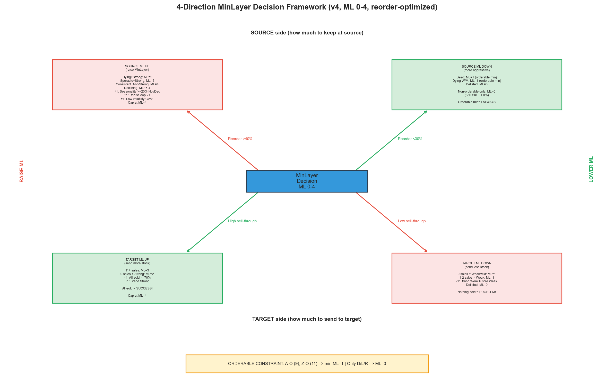
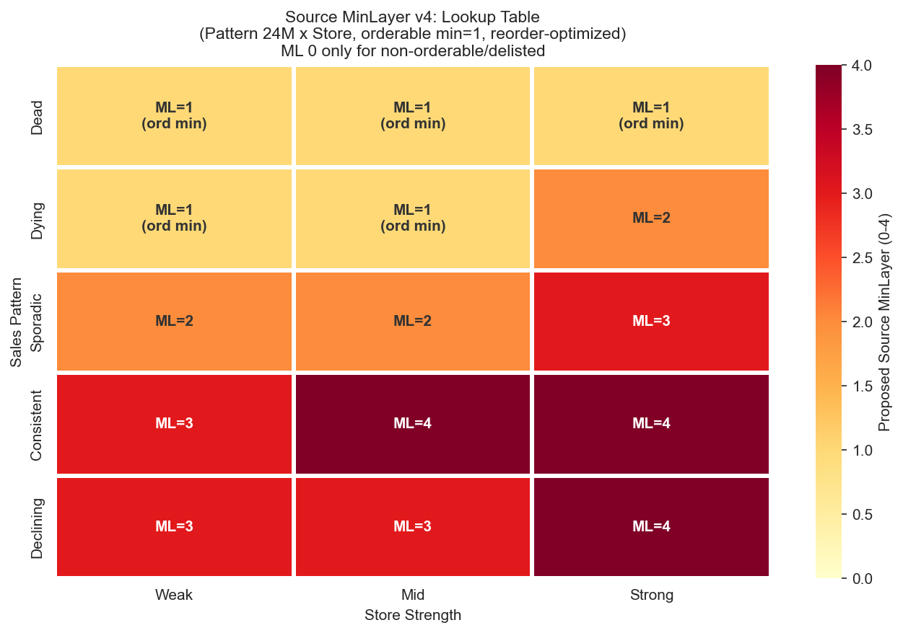
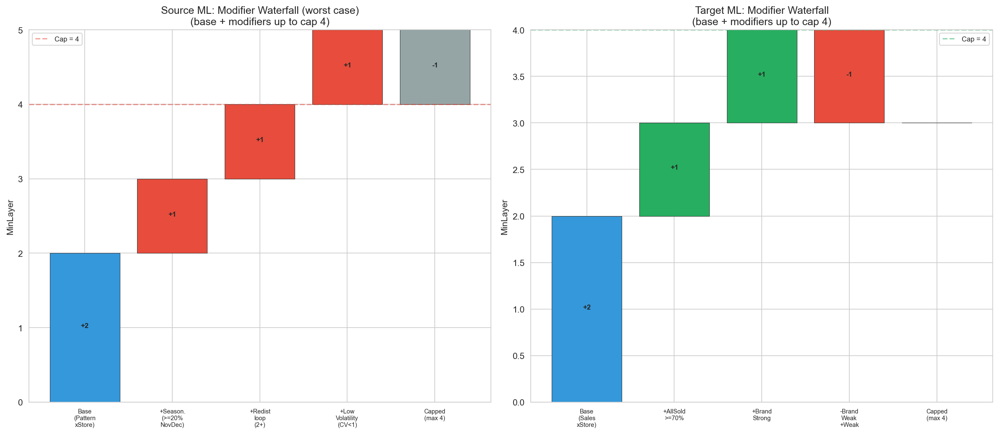
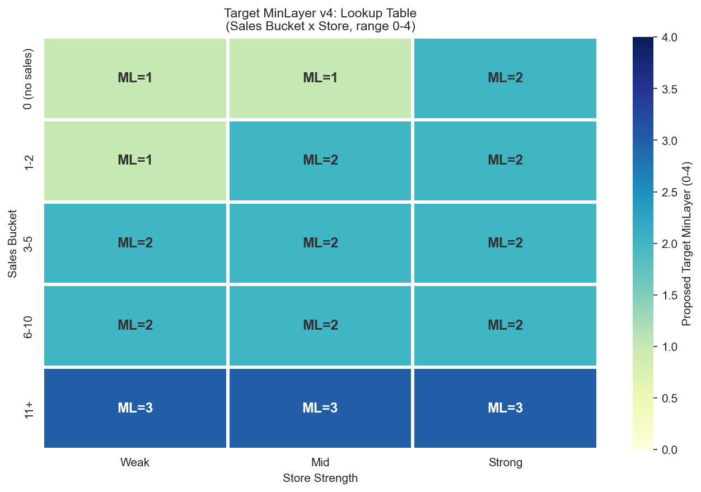
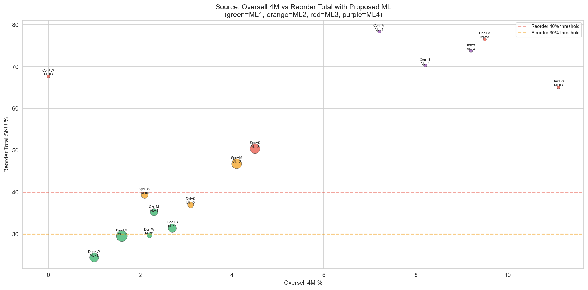

CalculationId=233 | Date: 2025-07-13 | Generated: 2026-03-22 15:28
Pravidla vychazi z Report 1. Strom ma 4 smery: source up, source down, target up, target down. v4: ML rozsah 0-4, orderable minimum ML=1. Strom optimalizovan na REDUKCI REORDERU.

| Direction | When | Action | Reason |
|---|---|---|---|
| SOURCE UP | Reorder total >40% | Ponechat vice na source | Produkty se stale aktivne prodavaji, vysoka mira reorderu |
| SOURCE DOWN | Reorder total <30% | ML=1 (orderable min) | Dead/Dying - neprodavaji se, nizky reorder |
| TARGET UP | All-sold >70% | Poslat vice na target (ML=3) | Target proda vse |
| TARGET DOWN | Nothing-sold >60% | ML=1 (minimum) | Target neproda |

| Pattern | Store | Oversell 4M % | Reorder Total SKU % | ML | Rec | Dir |
|---|---|---|---|---|---|---|
| Dead | Weak | 1.0% | 24.4% | 1 (ord min) | CAN LOWER | DOWN |
| Dead | Mid | 1.6% | 29.5% | 1 (ord min) | CAN LOWER | DOWN |
| Dead | Strong | 2.7% | 31.4% | 1 (ord min) | OK | OK |
| Dying | Weak | 2.2% | 29.7% | 1 (ord min) | CAN LOWER | DOWN |
| Dying | Mid | 2.3% | 35.2% | 1 (ord min) | OK | OK |
| Dying | Strong | 3.1% | 37.0% | 2 | OK | OK |
| Sporadic | Weak | 2.1% | 39.3% | 2 | OK | OK |
| Sporadic | Mid | 4.1% | 46.8% | 2 | OK | OK |
| Sporadic | Strong | 4.5% | 50.4% | 3 | MUST RAISE | UP |
| Consistent | Weak | 0.0% | 67.7% | 3 | MUST RAISE | UP |
| Consistent | Mid | 7.2% | 78.4% | 4 | MUST RAISE | UP |
| Consistent | Strong | 8.2% | 70.3% | 4 | MUST RAISE | UP |
| Declining | Weak | 11.1% | 65.1% | 3 | MUST RAISE | UP |
| Declining | Mid | 9.5% | 76.6% | 3 | MUST RAISE | UP |
| Declining | Strong | 9.2% | 73.8% | 4 | MUST RAISE | UP |
Dead/Dying W/M: ML=1 pro orderable (95.4% SKU). Dying+Strong: ML=2 (reorder 37.0%). Consistent+Mid/Strong a Declining+Strong: ML=4 (reorder 70-78%).
| Rule | Condition | ML | Reason |
|---|---|---|---|
| Active orderable | SkuClass = A-O (9) | MIN = 1 | Aktivni zbozi MUSI zustat (min 1 ks) |
| Z orderable | SkuClass = Z-O (11) | MIN = 1 | Z zbozi stale objednatelne |
| Delisted | SkuClass = D(3), L(4), R(5) | = 0 | Delisted = bezpecne vzit vse |
| Non-orderable | Neither A-O nor Z-O nor delisted | = 0 (allowed) | 380 SKU (1.0%) |
| Modifier | Condition | Adjustment | Evidence |
|---|---|---|---|
| Seasonality | >=20% NovDec | +1 ML | reorder_tot_sku 52.2% vs 33.9% |
| Redist loop | 2+ transfers | +1 ML | reorder_tot_sku 43.9-48.0% |
| Redist ratio | 25-50% supply | baseline | reorder_4m_sku 20.3% |
| Low volatility | CV<1 | +1 ML | reorder_tot_sku 45.2% |
| Delisting | SkuClass->D/L | ML=0 | override |


| Sales Bucket | Store | All-sold Total % | Nothing-sold 4M % | ML | Dir |
|---|---|---|---|---|---|
| 0 (no sales) | Weak | 31.4% | 73.7% | 1 | DOWN |
| 0 (no sales) | Mid | 37.7% | 73.7% | 1 | DOWN |
| 0 (no sales) | Strong | 51.6% | 61.1% | 2 | DOWN |
| 1-2 | Weak | 38.0% | 65.5% | 1 | DOWN |
| 1-2 | Mid | 40.9% | 62.0% | 2 | DOWN |
| 1-2 | Strong | 47.0% | 58.0% | 2 | OK |
| 3-5 | Weak | 54.4% | 45.1% | 2 | OK |
| 3-5 | Mid | 54.6% | 45.5% | 2 | OK |
| 3-5 | Strong | 61.0% | 40.8% | 2 | OK |
| 6-10 | Weak | 74.3% | 28.1% | 2 | UP |
| 6-10 | Mid | 76.2% | 26.8% | 2 | UP |
| 6-10 | Strong | 78.8% | 22.3% | 2 | UP |
| 11+ | Weak | 84.9% | 12.3% | 3 | UP |
| 11+ | Mid | 87.9% | 11.9% | 3 | UP |
| 11+ | Strong | 89.5% | 10.8% | 3 | UP |
| Modifier | Condition | Adjustment | Evidence |
|---|---|---|---|
| Brand-store mismatch | BrandWeak+StoreWeak | -1 ML | ST 55.3%, nothing-sold 54.9% |
| Delisting | SkuClass->D/L | ML=0 | override |
| All-sold trend | >=70% stores | +1 ML | high sell-through signal |

FUNCTION CalculateSourceMinLayer_v4(sku, store):
-- 1. Delisting override
IF sku.SkuClass IN (3, 4, 5): -- D, L, R
RETURN 0
-- 2. Base ML from Pattern x Store lookup (reorder-optimized)
pattern = ClassifySalesPattern24M(sku, store)
strength = ClassifyStoreStrength(store.Decile)
base = SOURCE_LOOKUP[pattern][strength]
-- Dead = 1, Dying W/M = 1, Dying S = 2, Sporadic W/M = 2, Sporadic S = 3
-- Consistent W = 3, Consistent M/S = 4, Declining W/M = 3, Declining S = 4
-- 3. ORDERABLE CONSTRAINT (v4 key rule)
IF sku.SkuClass IN (9, 11): -- A-O or Z-O
base = MAX(base, 1) -- NEVER ML=0
-- 4. Modifiers (UP only for source in v4, reorder-driven)
IF sku.NovDecShare >= 0.20: base += 1 -- seasonal (reorder 52.2%)
IF sku.RedistTransferCount >= 2: base += 1 -- loop (reorder 43.9-48.0%)
IF sku.VolatilityCV < 1.0: base += 1 -- stable = sells = reorder
RETURN CLAMP(base, 0, 4)
FUNCTION CalculateTargetMinLayer_v4(sku, store):
-- 1. Delisting override
IF sku.SkuClass IN (3, 4, 5):
RETURN 0
-- 2. Base ML from Sales x Store lookup
bucket = ClassifySalesBucket(sku, store)
strength = ClassifyStoreStrength(store.Decile)
base = TARGET_LOOKUP[bucket][strength]
-- 0+Weak = 1, 11+ = 3, rest mostly 2
-- 3. Modifiers
IF BrandStoreFit(sku, store) == 'BrandWeak+StoreWeak': base -= 1
IF sku.AllSoldPct >= 70: base += 1
IF sku.SkuClass IN (3, 4, 5): base = 0 -- delisted
RETURN CLAMP(base, 0, 4)
Generated: 2026-03-22 15:28 | CalculationId=233 | v4 ML 0-4 | Orderable min=1 | Reorder-optimized